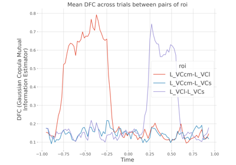
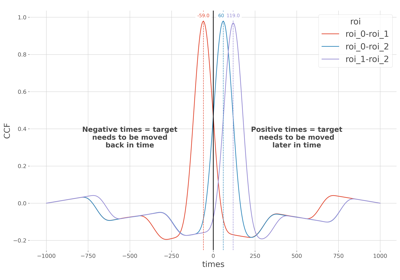

Connectivity and Information Transfer#
Compute the connectivity using mutual-information such as information transfer.

Estimate dynamic functional connectivity
Estimate dynamic functional connectivity


Lag estimation between delayed times-series using the cross-correlation
Lag estimation between delayed times-series using the cross-correlation